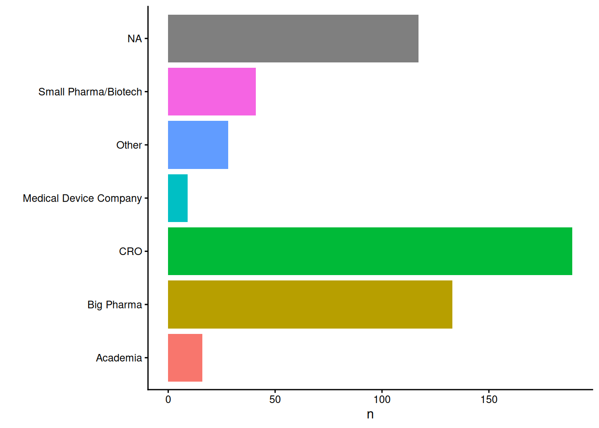

This January and February (2023), the admiral development team and the CDISC Open Source Alliance jointly hosted the admiral hackathon. The idea was to build a community of admiral users, and help participants familiarize themselves with R and admiral. This whole effort was led by Thomas Neitmann and was supported by Zelos Zhu, Sadchla Mascary, and me – Stefan Thoma.
The hackathon event was structured in two parts. First, we offered an Introduction to R for SAS programmers, a three hour workshop for R beginners to get them up to speed. Here we covered practical R basics, talking about how the R-workflow differs from a SAS workflow, and discussed common R functions - mostly from the tidyverse. This ensured that hackathon participants were familiar with core R concepts. The workshop recording and the course materials are available online.
The main hackathon consisted of several ADAM data generating tasks based on a specs file and synthetic data. Participants were able to solve these tasks in groups at their own pace thanks to a online tool where participants could upload their task specific R scripts and they would get automatic feedback for the data-set produced by their script. Script upload through the feedback application was available all through February, and we offered three additional online meetings throughout the month to discuss challenges and give some tips. If you are interested in learning more about the thoughts that went into the feedback application, you can read about it in this blogpost or check out my public GitHub repository for such an application.
Introduction to R workshop
We were really excited to see over 500 people from around 40 countries joining our Introduction to R workshop in January! To get to know prospective users and hackathon participants better, we conducted some polls during the meetings. Below you can see that representatives of many different sorts of organisations joined our Introduction to R workshop:
216 out of 402 confirmed that their company is already using R for clinical trial data analysis, the remaining 131 did not answer this question.
The target audience for this workshop was programmers who are very familiar with SAS, but not so familiar with R, our polls confirmed this.
Overall, we were very happy with how the workshop turned out, and participants overall agreed with this sentiment (although there may be a slight survivorship bias…).
admiral Hackathon
Following the kick-off meeting, 371 participants joined the posit (rStudio) workspace that was made available to all participants at no costs by the posit company. About half the participants planned to spend one to two hours per week on the admiral tasks, the other half planned to allocate even more. 15 participants even planned to spend eight hours or more!
We were really happy to see an overwhelming amount of activity on the slack channel we set up with over 250 members. Not only were people engaging with the materials, but we saw how a community was formed where people were encouraged to ask questions and where community members went out of their way to help each other. Shout-out to our community hero: Jagadish Katam without whom most issues related to the task programming raised by the community would not have been addressed as quickly as they were. Huge thanks from the organizers!
In the end, a total of 44 teams spanning 87 statistical programmers took part in the admiral hackathon and uploaded solution scripts to the hackathon application solving at least one of the 8 tasks available (ADSL, ADAE, ADLBC, ADVS, ADTTE, ADADAS, ADLBH & ADLBHY). Participants’ scripts were then run on the shiny server and the output data-frame were compared to the solutions we provided. At the read-out there was a live draft of teams to win one-on-one admiral consulting with one of the admiral core developers. Winning probabilities were weighted by the number of points each group received for the quality of their output data-frames and for the number of tasks solved.
Congratulations to the winners:
ViiV Team_GSKteamspoRtTatianaPXLDivyasneelamAdaMTeamIndiaSanofi_BPJagadish(our community hero)AZ_WAWA
Although this was uncertain during the hackathon we were excited to provide a Certificate of Completion to all participants who uploaded a script to the Web Application.
A recording of the hackathon readout can be found in the CDISC Open Source Alliance Quarterly Spotlight.
Conclusion
Overall, we are very happy with how the hackathon turned out. We were not only positively surprised with the huge audience for the Intro to R workshop (CDISC record breaking) and for the admiral hackathon, but even more so with the engagement of all the participants.
Again, we would like to thank all the organizers, participants, and sponsors for their time and resources and hope to have provided a useful glimpse into our solution for ADAM creation within the end-to-end clinical data analysis open source R framework that the pharmaverse aims to provide.
As always, we are very happy to hear more feedback on the hackathon as well as on admiral in general. Simply submit an issue on the admiral GitHub repository. You would like to join the admiral core developers? Please reach out to Edoardo Mancini (product owner) or Ben Straub (technical lead).
Last updated
2024-04-21 20:34:57.593922
Details
Reuse
Citation
BibTeX citation:
@online{thoma2023,
author = {Thoma, Stefan},
title = {Admiral {Hackathon} 2023 {Revisited}},
date = {2023-06-27},
url = {https://pharmaverse.github.io/blog/posts/2023-06-27_hackathon_writeup},
langid = {en}
}
For attribution, please cite this work as:
Thoma, Stefan. 2023. “Admiral Hackathon 2023 Revisited.”
June 27, 2023. https://pharmaverse.github.io/blog/posts/2023-06-27_hackathon_writeup.